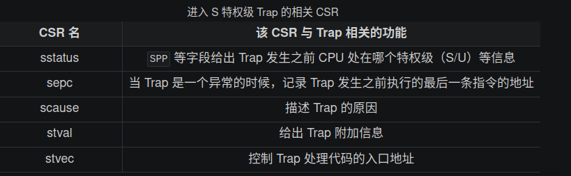

批处理系统
项目结构
user/src/bin 里面有多个文件，其中三个是：
hello_world：在屏幕上打印一行 Hello, world!
bad_address：访问一个非法的物理地址，测试批处理系统是否会被该错误影响
power：不断在计算操作和打印字符串操作之间切换
批处理系统会按照文件名顺序加载并运行它们。
每个应用程序的实现都在对应的单个文件中。打开 hello_world.rs，能看到一个 main 函数，还有外部库引用：
#[macro_use]
extern crate user_lib;
内存布局
我们使用链接脚本 user/src/linker.ld 规定用户程序的内存布局：
将程序的起始物理地址调整为 0x80400000 ，三个应用程序都会被加载到这个物理地址上运行；
将 _start 所在的 .text.entry 放在整个程序的开头 0x80400000； 批处理系统在加载应用后，跳转到 0x80400000，就进入了用户库的 _start 函数；
提供了最终生成可执行文件的 .bss 段的起始和终止地址，方便 clear_bss 函数使用。
系统调用
在子模块 syscall 中我们来通过 ecall 调用批处理系统提供的接口， 由于应用程序运行在用户态（即 U 模式）， ecall 指令会触发名为 Environment call from U-mode 的异常， 并 Trap 进入 S 模式执行批处理系统针对这个异常特别提供的服务程序。 这个接口被称为 ABI 或者系统调用。 现在我们不关心 S 态的批处理系统如何提供应用程序所需的功能，只考虑如何使用它。
在本章中，应用程序和批处理系统约定如下两个系统调用：
/// 功能：将内存中缓冲区中的数据写入文件。
/// 参数：`fd` 表示待写入文件的文件描述符；
/// `buf` 表示内存中缓冲区的起始地址；
/// `len` 表示内存中缓冲区的长度。
/// 返回值：返回成功写入的长度。
/// syscall ID：64
fn sys_write(fd: usize, buf: *const u8, len: usize) -> isize;
/// 功能：退出应用程序并将返回值告知批处理系统。
/// 参数：`xstate` 表示应用程序的返回值。
/// 返回值：该系统调用不应该返回。
/// syscall ID：93
fn sys_exit(xstate: usize) -> !;
实际调用时，我们要按照 RISC-V 调用规范，在合适的寄存器中放置参数， 然后执行 ecall 指令触发 Trap。当 Trap 结束，回到 U 模式后， 用户程序会从 ecall 的下一条指令继续执行，同时在合适的寄存器中读取返回值。
约定寄存器 a0~a6 保存系统调用的参数， a0 保存系统调用的返回值， 寄存器 a7 用来传递 syscall ID。 这超出了 Rust 语言的表达能力，我们需要内嵌汇编来完成参数/返回值绑定和 ecall 指令的插入：
pub fn syscall(id: usize, args: [usize; 3]) -> isize {
let mut ret: isize;
unsafe {
core::arch::asm!(
"ecall",
inlateout("x10") args[0] => ret,
in("x11") args[1],
in("x12") args[2],
in("x17") id
);
}
ret
}
第 3 行，我们将所有的系统调用都封装成 syscall 函数，可以看到它支持传入 syscall ID 和 3 个参数。
第 6 行开始，我们使用 Rust 提供的 asm! 宏在代码中内嵌汇编。 Rust 编译器无法判定汇编代码的安全性，所以我们需要将其包裹在 unsafe 块中。
简而言之，这条汇编代码的执行结果是以寄存器 a0~a2 来保存系统调用的参数，以及寄存器 a7 保存 syscall ID， 返回值通过寄存器 a0 传递给局部变量 ret。
这段汇编代码与第一章中出现过的内嵌汇编很像，读者可以查看 os/src/sbi.rs 。
这之后sys_write和sys_exit只需要对syscall进行包装
pub fn sys_write(fd: usize, buffer: &[u8]) -> isize {
syscall(SYSCALL_WRITE, [fd, buffer.as_ptr() as usize, buffer.len()])
}
pub fn sys_exit(exit_code: i32) -> ! {
syscall(SYSCALL_EXIT, [exit_code as usize, 0, 0]);
panic!("sys_exit never returns!");
}
我们将上述两个系统调用在用户库 user_lib 中进一步封装，像标准库一样：
pub fn write(fd: usize, buf: &[u8]) -> isize {
sys_write(fd, buf)
}
pub fn exit(exit_code: i32) -> ! {
console::flush();
sys_exit(exit_code);
}
在 console 子模块中，借助 write，我们为应用程序实现了 println! 宏。 传入到 write 的 fd 参数设置为 1，代表标准输出 STDOUT，暂时不用考虑其他的 fd 选取情况。
实现批处理系统
将应用程序链接到内核
在 os/src/main.rs 中能够找到这样一行：
core::arch::global_asm!(include_str!("link_app.S"));
这里我们引入了一段汇编代码 link_app.S ，它是在 make run 构建操作系统时自动生成的，里面的内容大致如下：
.align 3
.section .data
.global _num_app
_num_app:
.quad 7
.quad app_0_start
.quad app_1_start
.quad app_2_start
.quad app_3_start
.quad app_4_start
.quad app_5_start
.quad app_6_start
.quad app_6_end
.section .data
.global app_0_start
.global app_0_end
app_0_start:
.incbin "../user/build/bin/ch2b_bad_address.bin"
app_0_end:
.section .data
.global app_1_start
.global app_1_end
app_1_start:
.incbin "../user/build/bin/ch2b_bad_instructions.bin"
app_1_end:
.section .data
.global app_2_start
.global app_2_end
app_2_start:
.incbin "../user/build/bin/ch2b_bad_register.bin"
app_2_end:
.section .data
.global app_3_start
.global app_3_end
app_3_start:
.incbin "../user/build/bin/ch2b_hello_world.bin"
app_3_end:
.section .data
.global app_4_start
.global app_4_end
app_4_start:
.incbin "../user/build/bin/ch2b_power_3.bin"
app_4_end:
.section .data
.global app_5_start
.global app_5_end
app_5_start:
.incbin "../user/build/bin/ch2b_power_5.bin"
app_5_end:
.section .data
.global app_6_start
.global app_6_end
app_6_start:
.incbin "../user/build/bin/ch2b_power_7.bin"
app_6_end:
第 13 行开始的三个数据段分别插入了三个应用程序的二进制镜像， 并且各自有一对全局符号 app_start, app_end 指示它们的开始和结束位置。 而第 3 行开始的另一个数据段相当于一个 64 位整数数组。 数组中的第一个元素表示应用程序的数量，后面则按照顺序放置每个应用程序的起始地址， 最后一个元素放置最后一个应用程序的结束位置。这样数组中相邻两个元素记录了每个应用程序的始末位置， 这个数组所在的位置由全局符号 _num_app 所指示。
这个文件是在 cargo build 时，由脚本 os/build.rs 控制生成的。
找到并加载二进制应用程序的二进制码
我们在 os 的 batch 子模块中实现一个应用管理器 AppManager ，结构体定义如下：
struct AppManager {
num_app: usize,
current_app: usize,
app_start: [usize; MAX_APP_NUM + 1],
}
初始化 AppManager 的全局实例：
lazy_static! {
static ref APP_MANAGER: UPSafeCell<AppManager> = unsafe {
UPSafeCell::new({
extern "C" {
fn _num_app();
}
let num_app_ptr = _num_app as usize as *const usize;
let num_app = num_app_ptr.read_volatile();
let mut app_start: [usize; MAX_APP_NUM + 1] = [0; MAX_APP_NUM + 1];
let app_start_raw: &[usize] =
core::slice::from_raw_parts(num_app_ptr.add(1), num_app + 1);
app_start[..=num_app].copy_from_slice(app_start_raw);
AppManager {
num_app,
current_app: 0,
app_start,
}
})
};
}
初始化的逻辑很简单，就是找到 link_app.S 中提供的符号 _num_app ，并从这里开始解析出应用数量以及各个应用的开头地址。 用容器 UPSafeCell 包裹 AppManager 是为了防止全局对象 APP_MANAGER 被重复获取。
UPSafeCell 实现在 sync 模块中，调用 exclusive_access 方法能获取其内部对象的可变引用， 如果程序运行中同时存在多个这样的引用，会触发 already borrowed: BorrowMutError。
UPSafeCell 既提供了内部可变性，又在单核情境下防止了内部对象被重复借用，我们将在后文中多次见到它。
lazy_static! 宏提供了全局变量的运行时初始化功能。一般情况下，全局变量必须在编译期设置初始值， 但是有些全局变量的初始化依赖于运行期间才能得到的数据。 如这里我们借助 lazy_static! 声明了一个 AppManager 结构的名为 APP_MANAGER 的全局实例， 只有在它第一次被使用到的时候才会进行实际的初始化工作。
AppManager 的方法中， print_app_info/get_current_app/move_to_next_app 都相当简单直接，需要说明的是 load_app：
unsafe fn load_app(&self, app_id: usize) {
if app_id >= self.num_app {
println!("All applications completed!");
use crate::board::QEMUExit;
crate::board::QEMU_EXIT_HANDLE.exit_success();
}
println!("[kernel] Loading app_{}", app_id);
// clear app area
core::slice::from_raw_parts_mut(APP_BASE_ADDRESS as *mut u8, APP_SIZE_LIMIT).fill(0);
let app_src = core::slice::from_raw_parts(
self.app_start[app_id] as *const u8,
self.app_start[app_id + 1] - self.app_start[app_id],
);
let app_dst = core::slice::from_raw_parts_mut(APP_BASE_ADDRESS as *mut u8, app_src.len());
app_dst.copy_from_slice(app_src);
// Memory fence about fetching the instruction memory
// It is guaranteed that a subsequent instruction fetch must
// observes all previous writes to the instruction memory.
// Therefore, fence.i must be executed after we have loaded
// the code of the next app into the instruction memory.
// See also: riscv non-priv spec chapter 3, 'Zifencei' extension.
asm!("fence.i");
}
这个方法负责将参数 app_id 对应的应用程序的二进制镜像加载到物理内存以 0x80400000 起始的位置， 这个位置是批处理操作系统和应用程序之间约定的常数地址。 我们将从这里开始的一块内存清空，然后找到待加载应用二进制镜像的位置，并将它复制到正确的位置。
清空内存前，我们插入了一条奇怪的汇编指令 fence.i ，它是用来清理 i-cache 的。 我们知道， 缓存又分成 数据缓存 (d-cache) 和 指令缓存 (i-cache) 两部分，分别在 CPU 访存和取指的时候使用。 通常情况下， CPU 会认为程序的代码段不会发生变化，因此 i-cache 是一种只读缓存。 但在这里，我们会修改会被 CPU 取指的内存区域，使得 i-cache 中含有与内存不一致的内容， 必须使用 fence.i 指令手动清空 i-cache ，让里面所有的内容全部失效， 才能够保证程序执行正确性。
batch 子模块对外暴露出如下接口：
init ：调用 print_app_info 的时第一次用到了全局变量 APP_MANAGER ，它在这时完成初始化；
run_next_app ：批处理操作系统的核心操作，即加载并运行下一个应用程序。 批处理操作系统完成初始化，或者应用程序运行结束/出错后会调用该函数。
实现特权级转换
RISC-V特权级切换
特权级切换的起因
批处理操作系统为了建立好应用程序的执行环境，需要在执行应用程序前进行一些初始化工作， 并监控应用程序的执行，具体体现在：
启动应用程序时，需要初始化应用程序的用户态上下文，并能切换到用户态执行应用程序；
应用程序发起系统调用后，需要切换到批处理操作系统中进行处理；
应用程序执行出错时，批处理操作系统要杀死该应用并加载运行下一个应用；
应用程序执行结束时，批处理操作系统要加载运行下一个应用。
这些处理都涉及到特权级切换，因此都需要硬件和操作系统协同提供的特权级切换机制。 特权级切换相关的控制状态寄存器
本章中我们仅考虑当 CPU 在 U 特权级运行用户程序的时候触发 Trap， 并切换到 S 特权级的批处理操作系统进行处理。

特权级切换的硬件控制机制
当 CPU 执行完一条指令并准备从用户特权级 陷入（ Trap ）到 S 特权级的时候，硬件会自动完成如下这些事情：
sstatus 的 SPP 字段会被修改为 CPU 当前的特权级（U/S）。
sepc 会被修改为 Trap 处理完成后默认会执行的下一条指令的地址。
scause/stval 分别会被修改成这次 Trap 的原因以及相关的附加信息。
CPU 会跳转到 stvec 所设置的 Trap 处理入口地址，并将当前特权级设置为 S ，然后从Trap 处理入口地址处开始执行。
而当 CPU 完成 Trap 处理准备返回的时候，需要通过一条 S 特权级的特权指令 sret 来完成，这一条指令具体完成以下功能：
CPU 会将当前的特权级按照 sstatus 的 SPP 字段设置为 U 或者 S ；
CPU 会跳转到 sepc 寄存器指向的那条指令，然后继续执行。
用户栈与内核栈
在 Trap 触发的一瞬间， CPU 会切换到 S 特权级并跳转到 stvec 所指示的位置。 但是在正式进入 S 特权级的 Trap 处理之前，我们必须保存原控制流的寄存器状态，这一般通过栈来完成。 但我们需要用专门为操作系统准备的内核栈，而不是应用程序运行时用到的用户栈。
我们声明两个类型 KernelStack 和 UserStack 分别表示用户栈和内核栈，它们都只是字节数组的简单包装：
#[repr(align(4096))]
struct KernelStack {
data: [u8; KERNEL_STACK_SIZE],
}
#[repr(align(4096))]
struct UserStack {
data: [u8; USER_STACK_SIZE],
}
static KERNEL_STACK: KernelStack = KernelStack {
data: [0; KERNEL_STACK_SIZE],
};
static USER_STACK: UserStack = UserStack {
data: [0; USER_STACK_SIZE],
};
两个栈以全局变量的形式实例化在批处理操作系统的 .bss 段中。
我们为两个类型实现了 get_sp 方法来获取栈顶地址。由于在 RISC-V 中栈是向下增长的， 我们只需返回包裹的数组的结尾地址，以用户栈类型 UserStack 为例：
impl KernelStack {
fn get_sp(&self) -> usize {
self.data.as_ptr() as usize + KERNEL_STACK_SIZE
}
pub fn push_context(&self, cx: TrapContext) -> &'static mut TrapContext {
let cx_ptr = (self.get_sp() - core::mem::size_of::<TrapContext>()) as *mut TrapContext;
unsafe {
*cx_ptr = cx;
}
unsafe { cx_ptr.as_mut().unwrap() }
}
}
impl UserStack {
fn get_sp(&self) -> usize {
self.data.as_ptr() as usize + USER_STACK_SIZE
}
}
换栈是非常简单的，只需将 sp 寄存器的值修改为 get_sp 的返回值即可。
接下来是 Trap 上下文，即在 Trap 发生时需要保存的物理资源内容，定义如下：
#[repr(C)]
pub struct TrapContext {
/// general regs[0..31]
pub x: [usize; 32],
/// CSR sstatus
pub sstatus: Sstatus,
/// CSR sepc
pub sepc: usize,
}
可以看到里面包含所有的通用寄存器 x0~x31 ，还有 sstatus 和 sepc 。
对于通用寄存器而言，两条控制流（应用程序控制流和内核控制流）运行在不同的特权级，所属的软件也可能由不同的编程语言编写，虽然在 Trap 控制流中只是会执行 Trap 处理 相关的代码，但依然可能直接或间接调用很多模块，因此很难甚至不可能找出哪些寄存器无需保存。既然如此我们就只能全部保存了。但这里也有一些例外， 如 x0 被硬编码为 0 ，它自然不会有变化；还有 tp(x4) 寄存器，除非我们手动出于一些特殊用途使用它，否则一般也不会被用到。虽然它们无需保存， 但我们仍然在 TrapContext 中为它们预留空间，主要是为了后续的实现方便。
对于 CSR 而言，我们知道进入 Trap 的时候，硬件会立即覆盖掉 scause/stval/sstatus/sepc 的全部或是其中一部分。scause/stval 的情况是：它总是在 Trap 处理的第一时间就被使用或者是在其他地方保存下来了，因此它没有被修改并造成不良影响的风险。 而对于 sstatus/sepc 而言，它们会在 Trap 处理的全程有意义（在 Trap 控制流最后 sret 的时候还用到了它们），而且确实会出现 Trap 嵌套的情况使得它们的值被覆盖掉。所以我们需要将它们也一起保存下来，并在 sret 之前恢复原样。
Trap管理
上下文保存与恢复
首先是具体实现 Trap 上下文保存和恢复的汇编代码。
在批处理操作系统初始化时，我们需要修改 stvec 寄存器来指向正确的 Trap 处理入口点。
global_asm!(include_str!("trap.S"));
/// initialize CSR `stvec` as the entry of `__alltraps`
pub fn init() {
extern "C" {
fn __alltraps();
}
unsafe {
stvec::write(__alltraps as usize, TrapMode::Direct);
}
}
这里我们引入了一个外部符号 __alltraps ，并将 stvec 设置为 Direct 模式指向它的地址。我们在 os/src/trap/trap.S 中实现 Trap 上下文保存/恢复的汇编代码，分别用外部符号 __alltraps 和 __restore 标记为函数，并通过 global_asm! 宏将 trap.S 这段汇编代码插入进来。
Trap 处理的总体流程如下：首先通过 __alltraps 将 Trap 上下文保存在内核栈上，然后跳转到使用 Rust 编写的 trap_handler 函数 完成 Trap 分发及处理。当 trap_handler 返回之后，使用 __restore 从保存在内核栈上的 Trap 上下文恢复寄存器。最后通过一条 sret 指令回到应用程序执行。
首先是保存 Trap 上下文的 __alltraps 的实现：
.altmacro
.macro SAVE_GP n
sd x\n, \n*8(sp)
.endm
.macro LOAD_GP n
ld x\n, \n*8(sp)
.endm
.section .text
.globl __alltraps
.globl __restore
.align 2
__alltraps:
csrrw sp, sscratch, sp
# now sp->kernel stack, sscratch->user stack
# allocate a TrapContext on kernel stack
addi sp, sp, -34*8
# save general-purpose registers
sd x1, 1*8(sp)
# skip sp(x2), we will save it later
sd x3, 3*8(sp)
# skip tp(x4), application does not use it
# save x5~x31
.set n, 5
.rept 27
SAVE_GP %n
.set n, n+1
.endr
# we can use t0/t1/t2 freely, because they were saved on kernel stack
csrr t0, sstatus
csrr t1, sepc
sd t0, 32*8(sp)
sd t1, 33*8(sp)
# read user stack from sscratch and save it on the kernel stack
csrr t2, sscratch
sd t2, 2*8(sp)
# set input argument of trap_handler(cx: &mut TrapContext)
mv a0, sp
call trap_handler
第 7 行我们使用 .align 将 __alltraps 的地址 4 字节对齐，这是 RISC-V 特权级规范的要求；
第 9 行的 csrrw 原型是 可以将 CSR 当前的值读到通用寄存器 中，然后将 通用寄存器
的值写入该 CSR 。因此这里起到的是交换 sscratch 和 sp 的效果。在这一行之前 sp 指向用户栈， sscratch 指向内核栈（原因稍后说明），现在 sp 指向内核栈， sscratch 指向用户栈。
第 12 行，我们准备在内核栈上保存 Trap 上下文，于是预先分配
字节的栈帧，这里改动的是 sp ，说明确实是在内核栈上。
第 13~24 行，保存 Trap 上下文的通用寄存器 x0~x31，跳过 x0 和 tp(x4)，原因之前已经说明。我们在这里也不保存 sp(x2)，因为它在第 9 行 后指向的是内核栈。用户栈的栈指针保存在 sscratch 中，必须通过 csrr 指令读到通用寄存器中后才能使用，因此我们先考虑保存其它通用寄存器，腾出空间。
我们要基于 sp 来找到每个寄存器应该被保存到的正确的位置。实际上，在栈帧分配之后，我们可用于保存 Trap 上下文的地址区间为 ， 按照 TrapContext 结构体的内存布局，基于内核栈的位置（sp所指地址）来从低地址到高地址分别按顺序放置 x0~x31这些通用寄存器，最后是 sstatus 和 sepc 。因此通用寄存器 xn 应该被保存在地址区间
。
为了简化代码，x5~x31 这 27 个通用寄存器我们通过类似循环的 .rept 每次使用 SAVE_GP 宏来保存，其实质是相同的。注意我们需要在 trap.S 开头加上 .altmacro 才能正常使用 .rept 命令。
第 25~28 行，我们将 CSR sstatus 和 sepc 的值分别读到寄存器 t0 和 t1 中然后保存到内核栈对应的位置上。指令 的功能就是将 CSR 的值读到寄存器
中。这里我们不用担心 t0 和 t1 被覆盖， 因为它们刚刚已经被保存了。
第 30~31 行专门处理 sp 的问题。首先将 sscratch 的值读到寄存器 t2 并保存到内核栈上，注意： sscratch 的值是进入 Trap 之前的 sp 的值，指向 用户栈。而现在的 sp 则指向内核栈。
第 33 行令 ，让寄存器 a0 指向内核栈的栈指针也就是我们刚刚保存的 Trap 上下文的地址， 这是由于我们接下来要调用 trap_handler 进行 Trap 处理，它的第一个参数 cx 由调用规范要从 a0 中获取。而 Trap 处理函数 trap_handler 需要 Trap 上下文的原因在于：它需要知道其中某些寄存器的值，比如在系统调用的时候应用程序传过来的 syscall ID 和 对应参数。我们不能直接使用这些寄存器现在的值，因为它们可能已经被修改了，因此要去内核栈上找已经被保存下来的值。
RISC-V 中读写 CSR 的指令是一类能不会被打断地完成多个读写操作的指令。这种不会被打断地完成多个操作的指令被称为 原子指令 (Atomic Instruction)。这里的 原子 的含义是"不可分割的最小个体"，也就是说指令的多个操作要么都不完成，要么全部完成，而不会处于某种中间状态。
当 trap_handler 返回之后会从调用 trap_handler 的下一条指令开始执行，也就是从栈上的 Trap 上下文恢复的 __restore ：
__restore:
# case1: start running app by __restore
# case2: back to U after handling trap
mv sp, a0
# now sp->kernel stack(after allocated), sscratch->user stack
# restore sstatus/sepc
ld t0, 32*8(sp)
ld t1, 33*8(sp)
ld t2, 2*8(sp)
csrw sstatus, t0
csrw sepc, t1
csrw sscratch, t2
# restore general-purpuse registers except sp/tp
ld x1, 1*8(sp)
ld x3, 3*8(sp)
.set n, 5
.rept 27
LOAD_GP %n
.set n, n+1
.endr
# release TrapContext on kernel stack
addi sp, sp, 34*8
# now sp->kernel stack, sscratch->user stack
csrrw sp, sscratch, sp
sret
第 8 行比较奇怪，我们暂且不管，假设它从未发生，那么 sp 仍然指向内核栈的栈顶。
第 11~24 行负责从内核栈顶的 Trap 上下文恢复通用寄存器和 CSR 。注意我们要先恢复 CSR 再恢复通用寄存器，这样我们使用的三个临时寄存器 才能被正确恢复。
在第 26 行之前，sp 指向保存了 Trap 上下文之后的内核栈栈顶， sscratch 指向用户栈栈顶。我们在第 26 行在内核栈上回收 Trap 上下文所 占用的内存，回归进入 Trap 之前的内核栈栈顶。第 27 行，再次交换 sscratch 和 sp，现在 sp 重新指向用户栈栈顶，sscratch 也依然保存 进入 Trap 之前的状态并指向内核栈栈顶。
在应用程序控制流状态被还原之后，第 28 行我们使用 sret 指令回到 U 特权级继续运行应用程序控制流。
trap分发
Trap 在使用 Rust 实现的 trap_handler 函数中完成分发和处理：
#[no_mangle]
/// handle an interrupt, exception, or system call from user space
pub fn trap_handler(cx: &mut TrapContext) -> &mut TrapContext {
let scause = scause::read(); // get trap cause
let stval = stval::read(); // get extra value
match scause.cause() {
Trap::Exception(Exception::UserEnvCall) => {
cx.sepc += 4;
cx.x[10] = syscall(cx.x[17], [cx.x[10], cx.x[11], cx.x[12]]) as usize;
}
Trap::Exception(Exception::StoreFault) | Trap::Exception(Exception::StorePageFault) => {
println!("[kernel] PageFault in application, kernel killed it.");
run_next_app();
}
Trap::Exception(Exception::IllegalInstruction) => {
println!("[kernel] IllegalInstruction in application, kernel killed it.");
run_next_app();
}
_ => {
panic!(
"Unsupported trap {:?}, stval = {:#x}!",
scause.cause(),
stval
);
}
}
cx
}
第 4 行声明返回值为 &mut TrapContext 并在第 25 行实际将传入的 cx 原样返回，因此在 __restore 的时候 a0 寄存器在调用 trap_handler 前后并没有发生变化，仍然指向分配 Trap 上下文之后的内核栈栈顶，和此时 sp 的值相同，我们
并不会有问题；
第 7 行根据 scause 寄存器所保存的 Trap 的原因进行分发处理。这里我们无需手动操作这些 CSR ，而是使用 Rust 第三方库 riscv 。
第 8~11 行，发现触发 Trap 的原因是来自 U 特权级的 Environment Call，也就是系统调用。这里我们首先修改保存在内核栈上的 Trap 上下文里面 sepc，让其增加 4。这是因为我们知道这是一个由 ecall 指令触发的系统调用，在进入 Trap 的时候，硬件会将 sepc 设置为这条 ecall 指令所在的地址（因为它是进入 Trap 之前最后一条执行的指令）。而在 Trap 返回之后，我们希望应用程序控制流从 ecall 的下一条指令 开始执行。因此我们只需修改 Trap 上下文里面的 sepc，让它增加 ecall 指令的码长，也即 4 字节。这样在 __restore 的时候 sepc 在恢复之后就会指向 ecall 的下一条指令，并在 sret 之后从那里开始执行。
用来保存系统调用返回值的 a0 寄存器也会同样发生变化。我们从 Trap 上下文取出作为 syscall ID 的 a7 和系统调用的三个参数 a0~a2 传给 syscall 函数并获取返回值。 syscall 函数是在 syscall 子模块中实现的。 这段代码是处理正常系统调用的控制逻辑。
第 12~20 行，分别处理应用程序出现访存错误和非法指令错误的情形。此时需要打印错误信息并调用 run_next_app 直接切换并运行下一个 应用程序。
第 21 行开始，当遇到目前还不支持的 Trap 类型的时候，批处理操作系统整个 panic 报错退出。
对于系统调用而言， syscall 函数并不会实际处理系统调用，而只是根据 syscall ID 分发到具体的处理函数：
/// handle syscall exception with `syscall_id` and other arguments
pub fn syscall(syscall_id: usize, args: [usize; 3]) -> isize {
match syscall_id {
SYSCALL_WRITE => sys_write(args[0], args[1] as *const u8, args[2]),
SYSCALL_EXIT => sys_exit(args[0] as i32),
_ => panic!("Unsupported syscall_id: {}", syscall_id),
}
}
这里我们会将传进来的参数 args 转化成能够被具体的系统调用处理函数接受的类型。它们的实现都非常简单：
const FD_STDOUT: usize=1;
/// write buf of length `len` to a file with `fd`
pub fn sys_write(fd: usize, buf: *const u8, len: usize) -> isize {
trace!("kernel: sys_write");
match fd {
FD_STDOUT => {
let slice = unsafe { core::slice::from_raw_parts(buf, len) };
let str = core::str::from_utf8(slice).unwrap();
print!("{}", str);
len as isize
}
_ => {
panic!("Unsupported fd in sys_write!");
}
}
}
sys_write 我们将传入的位于应用程序内的缓冲区的开始地址和长度转化为一个字符串 &str ，然后使用批处理操作系统已经实现的 print! 宏打印出来。这里我们并没有检查传入参数的安全性，存在安全隐患。
sys_exit 打印退出的应用程序的返回值并同样调用 run_next_app 切换到下一个应用程序。
执行应用程序
当批处理操作系统初始化完成，或者是某个应用程序运行结束或出错的时候，我们要调用 run_next_app 函数切换到下一个应用程序。此时 CPU 运行在 S 特权级，而它希望能够切换到 U 特权级。在 RISC-V 架构中，唯一一种能够使得 CPU 特权级下降的方法就是通过 Trap 返回系列指令，比如 sret 。事实上，在运行应用程序之前要完成如下这些工作：
跳转到应用程序入口点 0x80400000；
将使用的栈切换到用户栈；
在 __alltraps 时我们要求 sscratch 指向内核栈，这个也需要在此时完成；
从 S 特权级切换到 U 特权级。
它们可以通过复用 __restore 的代码来更容易的实现上述工作。我们只需要在内核栈上压入一个为启动应用程序而特殊构造的 Trap 上下文，再通过 __restore 函数，就能 让这些寄存器到达启动应用程序所需要的上下文状态。
impl TrapContext {
/// set stack pointer to x_2 reg (sp)
pub fn set_sp(&mut self, sp: usize) {
self.x[2] = sp;
}
/// init app context
pub fn app_init_context(entry: usize, sp: usize) -> Self {
let mut sstatus = sstatus::read(); // CSR sstatus
sstatus.set_spp(SPP::User); //previous privilege mode: user mode
let mut cx = Self {
x: [0; 32],
sstatus,
sepc: entry, // entry point of app
};
cx.set_sp(sp); // app's user stack pointer
cx // return initial Trap Context of app
}
}
为 TrapContext 实现 app_init_context 方法，修改其中的 sepc 寄存器为应用程序入口点 entry， sp 寄存器为我们设定的 一个栈指针，并将 sstatus 寄存器的 SPP 字段设置为 User 。
在 run_next_app 函数中我们能够看到
/// run next app
pub fn run_next_app() -> ! {
let mut app_manager = APP_MANAGER.exclusive_access();
let current_app = app_manager.get_current_app();
unsafe {
app_manager.load_app(current_app);
}
app_manager.move_to_next_app();
drop(app_manager);
// before this we have to drop local variables related to resources manually
// and release the resources
extern "C" {
fn __restore(cx_addr: usize);
}
unsafe {
__restore(KERNEL_STACK.push_context(TrapContext::app_init_context(
APP_BASE_ADDRESS,
USER_STACK.get_sp(),
)) as *const _ as usize);
}
panic!("Unreachable in batch::run_current_app!");
}
__restore 所做的事情是在内核栈上压入一个 Trap 上下文，其 sepc 是应用程序入口地址 0x80400000 ，其 sp 寄存器指向用户栈，其 sstatus 的 SPP 字段被设置为 User 。 push_context 的返回值是内核栈压入 Trap 上下文之后的栈顶，它会被作为 __restore 的参数（ 回看 __restore 代码 ，这时我们可以理解为何 __restore 函数的起始部分会完成 ），这使得在 __restore 函数中 sp 仍然可以指向内核栈的栈顶。这之后，就和执行一次普通的 __restore 函数调用一样了。